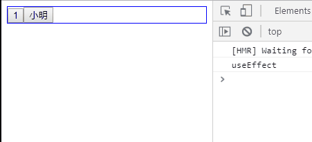
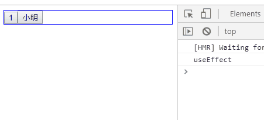
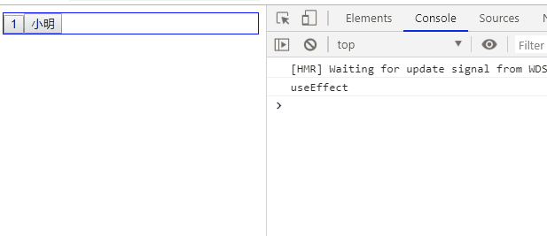

020-hooks-useEffect和useLayoutEffect
1、useEffect
副作用函数，用来充当生命周期使用的
- 在
render()之后执行，即组件挂载完成、数据更新DOM后会执行 useEffect()根据参数不同，有不同的作用
1.1 接受一个函数
第1个参数为函数，表示组件挂载完成、数据更新DOM后的回调（可以理解监听了所有属性）
import { useState, useEffect } from "react";
export default function ChildFun () {
const [count, setCount] = useState(1);
const [name, setName] = useState('小明');
useEffect(() => {
console.log('useEffect');
});
return (
<div className="child-fun">
<button onClick={() => setCount(count+1)}>{count}</button>
<button onClick={() => setName(name+'a')}>{name}</button>
</div>
);
}
- 接受一个函数，则该函数会在挂载和跟新数据后调用

1.2 接受第2个参数，是一个数组
useEffect()可以接受第2个参数，表示要监听哪个状态，当状态发生改变就会触发回调
import { useState, useEffect } from "react";
export default function ChildFun () {
const [count, setCount] = useState(1);
const [name, setName] = useState('小明');
useEffect(() => {
console.log('useEffect');
}, [count]);
return (
<div className="child-fun">
<button onClick={() => setCount(count+1)}>{count}</button>
<button onClick={() => setName(name+'a')}>{name}</button>
</div>
);
}
像上面例子中，因为useEffect()第2个参数是[count]，所以当组件挂载完成/count变量发生改变，就会触发回调

如果第2个参数传递的是一个空数组[]，那么这个useEffect()就不会监听任何变量，只会在组件挂载完成的时候回调一次
useEffect(() => {
console.log('useEffect');
}, []);
1.3 第1个参数里面返回一个函数
第1个参数是回调函数A，如果里面再return一个函数B，那么该函数B会在调用函数A前调用一次。并且如果组件销毁了，也会调用函数B
export default function ChildFun () {
const [count, setCount] = useState(1);
const [name, setName] = useState('小明');
useEffect(() => {
return () => {
console.log('render之后，useEffect之前');
};
}, [count]);
return (
<div className="child-fun">
<button onClick={() => setCount(count+1)}>{count}</button>
<button onClick={() => setName(name+'a')}>{name}</button>
</div>
);
}

2、useLayoutEffect
useLayoutEffect()和useEffect()接受的参数和含义是一样的，只是2者触发的时机不同
useLayoutEffect()是在DOM更新之后触发useEffect()是在render()之后触发